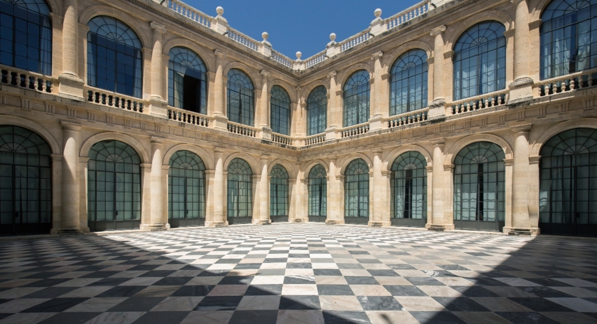
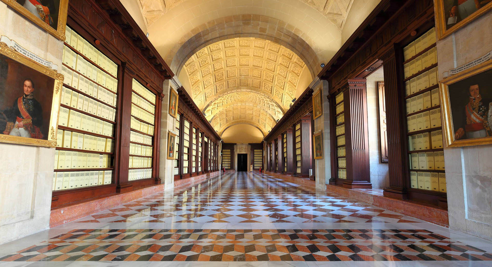

TouristSpain
TouristSpain
-

- 
- 


Monumentos de Sevilla
El Archivo de Indias
El Archivo General de Indias, antigua Lonja de Mercaderes, fue construido en 1572. Fue proyectado por Juan de Herrera y edificado por Alonso de Vandelviva y Juan de Minjares. En el siglo XVII se construyó la segunda planta y la Cruz de Juramento. Un siglo después, cuando Carlos III eligió este edificio como sede del Archivo General de Indias, se realizaron otras obras, como la redecoración de la escalera principal. Es un edificio de planta cuadrada con un amplio patio central. En su interior se guardan valiosos documentos que permiten recrear la historia de la relación de España con las colonias ultramarinas de América.
 DIRECCION Y DATOS DE CONTACTO
DIRECCION Y DATOS DE CONTACTO
Direccion: Edificio de la Lonja
Avenida de la Constitución, 3
41071 Sevilla (Andalucía)
E-mail: agi2@cultura.gob.es
Tlf: +34 954 500 528
web:
http://www.culturaydeporte.gob.es/
cultura/areas/archivos/mc/archivos/
agi/portada.html